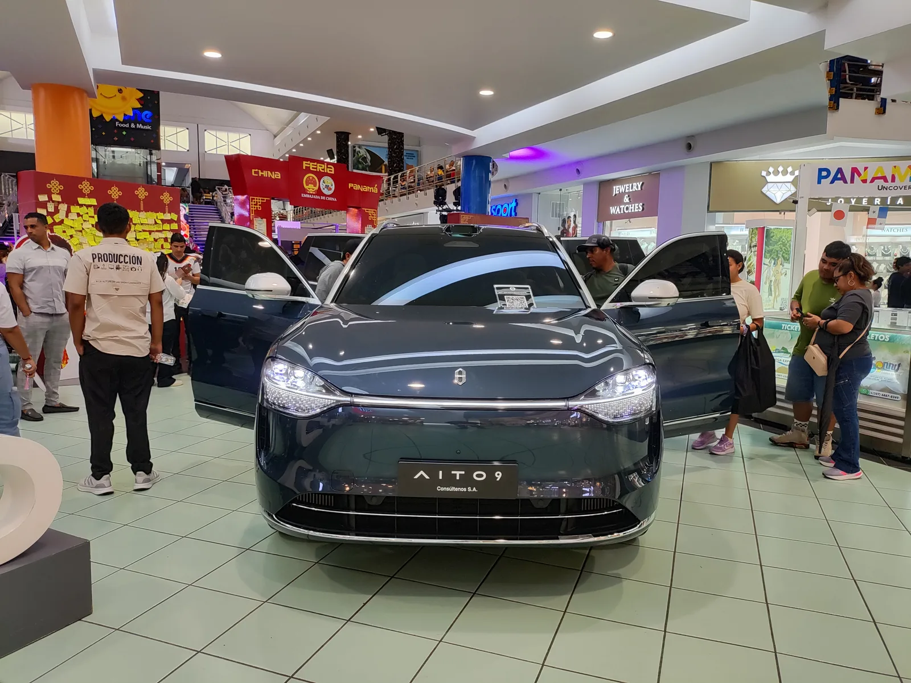

▲ BYD의 플래그십 세단 한(Han) EV. BYD는 '갓츠아이(God's Eye)' 지능형 주행 시스템을 상위 트림에 순차 탑재하며 레벨3 승인 절차를 밟고 있다.
1. 왜 2026년이 '원년'인가
중국 자율주행 업계와 외신들은 2026년을 레벨3 자율주행의 대규모 상업 배치가 본격화되는 첫 해로 지목하고 있다. 정부 정책 지원과 주요 완성차·기술 기업들의 활발한 시험·개발이 맞물린 결과다. 산업정보기술부(MIIT)를 포함한 7개 부서는 레벨3 차량 생산에 대한 조건부 승인과 도로 안전·보험법 개정을 담은 작업 계획을 내놓았으며, 이 가운데 가장 중요한 대목은 '레벨3 이상 자율주행 사고에 대해서는 제조사가 1차 책임을 진다'는 원칙을 명문화한 부분이다.
이는 그동안 규제 공백으로 남아 있던 사고 책임 소재를 명확히 함으로써, 완성차 업체들이 레벨3 기능을 실제 양산차에 탑재할 법적 근거를 마련해준다는 의미가 있다. 국내에서도 관련 법 개정은 2026년 하반기 정식 발표가 예상되는 초안 공개 단계로 알려졌다.

▲ BYD의 대중형 세단 친(Qin) 맥스 실내. 지능형 주행 기능이 플래그십을 넘어 대중형 모델로 확대되는 흐름을 보여준다. ⓒ BYD
2. 화웨이의 레벨3 로드맵
화웨이는 자동차 부문 지능형 운전 생태계 '하이마(HIMA)'를 통해 2026년 레벨3 본격 진입, 2027년 레벨4 업그레이드를 공언한 상태다. 화웨이의 지능형 주행 시스템 '첸쿤(Qiankun)'은 베이징·상하이 등 7개 도시에서 고속도로 구간 레벨3 도로 테스트를 진행 중이며, 공식 출시를 준비하고 있다. 최신 세대인 첸쿤 ADS 5.0은 중간 단계를 건너뛰고 고속 구간 핸즈오프(hands-off)가 가능한 레벨3를 곧바로 지원하는 것이 특징이다.
화웨이의 지능형 주행 솔루션을 채택한 브랜드는 아이토(AITO)·럭시드(Luxeed)·스텔라토(Stelato)·마에스트로(Maextro) 등 하이마 계열은 물론, BYD·둥펑·아우디·이치·창안·광저우자동차·베이징자동차 등으로 확대되는 추세다. 2026년 말까지 첸쿤 지능형 주행 시스템을 탑재한 모델은 80종을 넘어서고, 누적 장착 대수는 약 300만 대에 이를 것으로 전망된다.

▲ 화웨이 지능형 주행 생태계 '하이마' 계열 브랜드 아이토(AITO)의 대형 SUV '아이토 9'. 화웨이의 첸쿤 ADS 시스템을 탑재한 대표 모델 중 하나다. ⓒ Wikimedia Commons
3. BYD와 니오의 진행 상황
BYD는 자체 개발한 '갓츠아이(God's Eye)' 지능형 주행 시스템을 플래그십 세단·SUV 라인업에 순차 탑재하며 레벨3 승인 절차에 들어섰다. 갓츠아이는 고속도로와 도심 주행을 모두 지원하며 차선 변경, 추월, 진입로 합류를 자동으로 처리한다. 다만 2026년 현재는 상위 트림이나 별도 옵션 패키지로 제공되는 단계로, 전체 라인업에 표준 탑재된 것은 아니다.

▲ 니오의 플래그십 세단 ET9. 니오는 FAW·상하이자동차 등과 함께 중국의 레벨3 승인 절차에 진입한 완성차 업체로 꼽힌다. ⓒ Wikimedia Commons
니오(NIO)는 이미 2024년 6월 중국의 1차 레벨3·레벨4 시범 완성차 명단에 이름을 올렸으며, FAW·상하이자동차(SAIC) 등과 함께 레벨3 승인 절차를 밟고 있다. 앞서 2025년 12월에는 국유 완성차인 창안자동차와 베이징자동차(BAIC)의 전기 세단 2종이 중국 산업정보기술부로부터 레벨3 자율주행 차량으로는 처음으로 정식 제품 승인을 받은 바 있어, 국유·민영을 가리지 않고 승인 경쟁이 확산되는 모습이다.
| 업체 | 시스템/모델 | 현황 |
|---|---|---|
| 화웨이(하이마) | 첸쿤 ADS 5.0 | 7개 도시 고속도로 구간 레벨3 테스트, 2026년 본격 출시 목표 |
| BYD | 갓츠아이(God's Eye) | 플래그십 세단·SUV 상위 트림 탑재, 승인 절차 진행 중 |
| 니오 | - | 1차 레벨3·4 시범 명단 등재, 승인 절차 진행 중 |
| 창안자동차·베이징자동차 | 딥알 SL03 등 | 2025년 12월 국가 최초 레벨3 정식 제품 승인 획득 |
4. 남은 규제 변수
레벨3 대량 상용화의 최대 변수는 여전히 통일된 국가 안전 기준의 완성 시점이다. 중국 산업정보기술부(MIIT)는 2026년 2월경 '스마트 커넥티드카 자율주행 시스템 안전 요구' 강제 국가표준 초안을 공개해 의견 수렴 절차를 밟았고, 이후 6월에는 후속 초안을 추가로 내놓으며 규정을 다듬었다. 시행 시점은 2027년 7월 1일로 못박힌 상태이며, 기존에 시행 중이던 권고 표준(2024년 9월 시행)을 대체하는 중국 최초의 '강제' 표준이라는 점이 핵심이다. 권고 표준은 기업이 자율적으로 따르는 방식이었지만, 강제 표준은 기준 미달 시 생산·판매·수입 자체가 금지된다. 기존에 승인받은 차량도 시행 13개월 뒤부터는 새 기준을 적용받는다.
📍 레벨3와 레벨2+의 차이
레벨2(운전자 보조)와 달리 레벨3는 특정 조건(예: 고속도로 정체 구간)에서 운전자가 전방을 주시하지 않아도 되며, 사고 발생 시 책임이 운전자가 아닌 시스템·제조사 쪽으로 이동한다. 중국이 제조사 1차 책임 원칙을 법제화하려는 이유도 여기에 있다. 반면 그간 중국 업체들이 광범위하게 탑재해 온 'NOA(내비게이션 온 오토파일럿)'류 기능 다수는 여전히 레벨2 또는 레벨2+로 분류된다.
5. 한국·글로벌 시장에 미칠 영향
중국이 레벨3 상용화 속도에서 앞서 나가면, 글로벌 완성차·부품 업계 전반의 기술 개발 경쟁도 빨라질 가능성이 크다. 다만 국내에 적용될 경우 현행 법규상 레벨3 기능이 레벨2 수준으로 제한될 가능성이 있다는 지적도 나온다. 국가별 도로교통법과 보험 체계가 제각각인 만큼, 중국에서 승인된 레벨3 기능이 해외 시장에 그대로 이식되기까지는 별도의 인증 절차가 필요하다.
✅ 체크포인트
· '2026년 원년'은 업계·외신의 전망이며 중국 정부의 공식 선언 문구는 아니다
· 화웨이 첸쿤, BYD 갓츠아이 모두 아직 상위 트림·옵션 단계로, 전 라인업 표준 탑재는 아니다
· 통일 안전(강제) 국가표준은 2026년 상반기 초안이 공개됐고 시행은 2027년 7월 1일로 예정돼 있다
· 창안·베이징자동차는 이미 정식 제품 승인을 받은 국가 최초 사례이며, 2026년 9월 현재까지 이 구도(BYD·니오는 절차 진행 중, 창안·베이징차만 정식 승인)에는 변동이 없다

▲ 중국 자동차 전시회의 급속 충전 인프라 부스. 레벨3 자율주행 확산은 전동화·충전 인프라 고도화와 함께 진행되고 있다. ⓒ Wikimedia Commons
6. 정리
중국은 정부 주도의 법·제도 정비와 화웨이·BYD·니오 등 주요 업체의 기술 확산이 맞물리며 2026년을 레벨3 자율주행 대규모 상업화의 원년으로 만들어가고 있다. 창안자동차·베이징자동차가 이미 국가 최초 레벨3 정식 승인을 받았고, 화웨이의 첸쿤 ADS 5.0과 BYD의 갓츠아이도 승인 절차를 밟고 있다. 다만 통일된 국가 안전 기준은 아직 초안 단계이며, 정식 발표 이후에야 본격적인 대량 양산·판매가 가능해질 전망이다.